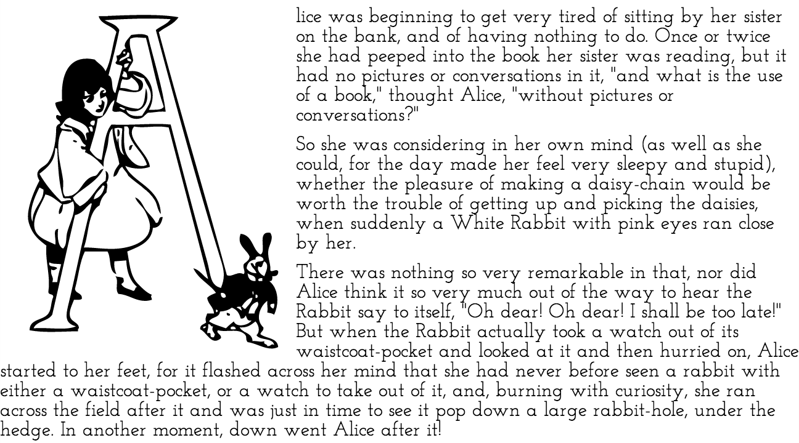
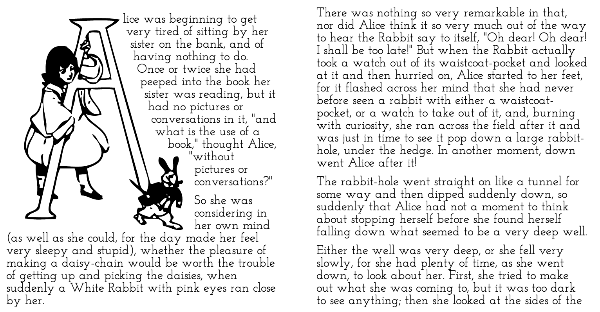

Moving Web Standards Forward, Faster
About Me
The Evolution of Text Layout

 From André Graciotti
From André Graciotti
On the Web
Source: simonfosterdesign.com
 Source: tvsafety.org
Source: tvsafety.org
 Source: The Great Discontent
Source: The Great Discontent
but it's still hard

.content:before {
display:block;
float:left;
width:240px;
height:280px;
background:url(...);
}

???
Regions and Exclusions
Extending the language
Regions

.content { flow-into: story-flow; }
.region { flow-from: story-flow; }Exclusions

.circle {
wrap-flow: end;
shape-outside: circle(50%, 50%, 50%);
shape-inside: outside-shape;
}What is a Web Standard?
Web standards are technologies, established by the W3C and other standards bodies, that are used to create and interpret web-based content. These technologies are designed to future-proof documents published on the Web and to make those documents accessible to as many people and devices as possible.
Roger Johansson
Different People
Different Devices
Different Browsers


Who is going to make it happen?
Standards Bodies
W3C publishes documents that define Web technologies. These documents follow a process designed to promote consensus, fairness, public accountability, and quality. At the end of this process, W3C publishes Recommendations, which are considered Web standards.
W3C FAQ
The W3C Process
Working Draft
Candidate Recommendation
Recommendation
What is a Standard?
.circle {
wrap-flow: end;
shape-outside: circle(...);
shape-inside: outside-shape;
}Is it a Standard?
Media Queries
@media screen and (max-width: 600px) { }- Browser Support: Very Good
- W3C Status: (Rec 2012.06.19)
Gradients
background-image:
linear-gradient(bottom, white, black);- Browser Support: Good
- W3C Status: (CR 2012.04.17)
Border Radius
border-radius: 10px;- Browser Support: Very Good
- W3C Status: (CR 2012.07.24)
A Brief History of CSS
- 1990 First web page & web browser
- 1994 The W3C is formed to help shape standards on the web
- 1995 CSS1 First public working draft
- 1996 CSS1 Recommendation
- 1997 CSS2 First public working draft
- 1998 CSS2 Recommendation
- 2000 CSS3 Roadmap
- 2002 CSS2 Revision 1 Working draft
- 2011 CSS2 Revision 1 Recommendation
- 2011 Regions and Exclusions first public working drafts
CSS 2.1
- CSS2 lacked a Candidate Recommendation phase
- Specification and implementations differed
- Some material was removed
- Some material was added
Standards synthesize specification & implementation
The W3C helps guide this process
Regions & Exclusions
- Are currently in the Working Draft stage
- with experimental implementations in IE / WebKit
How can we build standards faster?
Reduce Complexity
- CSS 1 - 24,630 words
- CSS 2 - 92,050 words
- CSS 2.1 - 140,396 words
- CSS 3 - 391,611 words
Modular Standards
Regions and Exclusions
Regions, Exclusions, and
Page
Temp
late
s
Fragmentation
break-before:
region
Masking
clip-path: shape
How lightweight can we make modules?
Each module is part of a larger toolset
C
SS
REG
IONS
A
N
D
EXCL
USI
ON
S
.region {
flow-from: story-flow;
shape-inside: polygon(...);
}
.content { flow-into: story-flow; }.region { shape-inside: polygon(...); }
.content { shape-inside: circle(...); }Regions and
M
U
L
T
I
C
O
L
U
M
N
Regions and
M
U
L
O
L
U
T
I
C
M
N
Exclusions and
FL
EX
BO
X
Web Components
A
N
D
REG-
IONS
Standards aren't standing still
{ shape-inside:
circle(...); }
circle(...); }
C O
N T E
N T
N T E
N T
Evolving Browsers
Releasing early, and often
Native implementations
- Prove a feature can be done
- in a performant manner
- just like any other web feature
But
- You are tied to a specific browser,
- and its release schedule,
- and a higher degree of finish
Polyfills
fake the functionality of the future, today
polyfill.js
older browsers
polyfill.js
new functionality
Polyfills
- work now
- across browsers
- can be replaced by native
- let you try out new features
But
- Polyfills are a workaround
- Feature specs are likely to change
- Polyfills can be non-performant